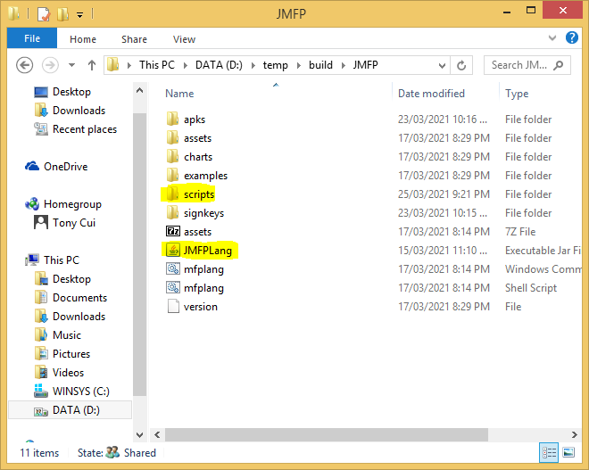
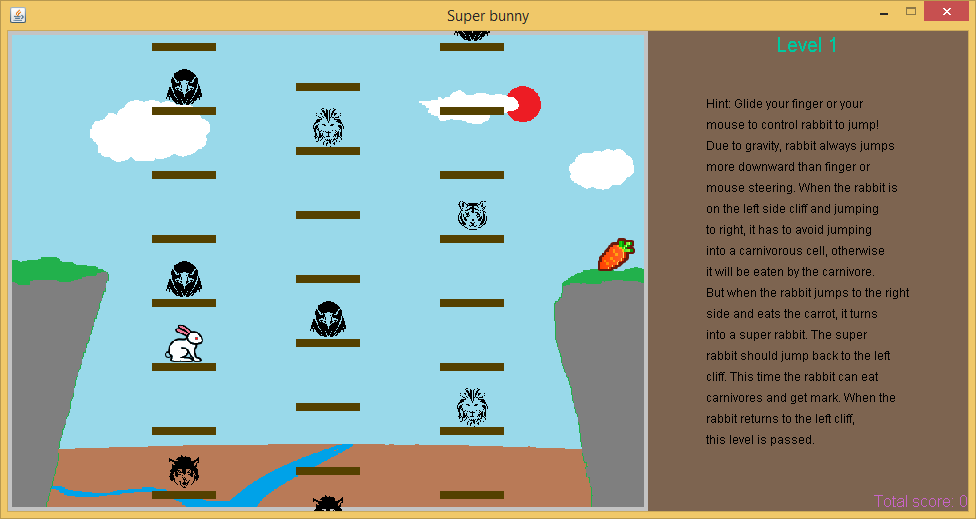

MFP language Help: A rabbit jumping game
Rabbit jumping game, as the name suggested, is that a rabbit jumps from one cliff to another cliff through a number of elevators. Each elevator is a list of cells. There are predators, e.g. eagle and tiger, in some cells. When the rabbit jumps from the left cliff to the right, it can only temporarily stay in the cells without predator. Otherwise, it will be eaten. Moreover, if it is stuck in between two cells, or if the rabbit's standing cell moves out of jumping area, the player fails.
When the rabbit arrives at the right side, it turns to a super rabbit. This time it can jump into the cells with predator and eat the predator. After it jumps back to the left side, the player passes the game and moves to the next level.
Rabbit jumping game is logically more sophisticated than the hungry snake game and the gem crush game. But as the other examples, it minimizes the number of screen painting activities by drawing in buffered image and then posting the image to screen. As such its performance is still good. Player may find its animation is more smooth than the gem crush game.
The sample code and its auxiliary files have been zipped in package. Click here to download zipped package of game examples. Unzip it and copy the game_examples folder into the scripts folder next to the JMFPLang.jar file, as shown in the following chart.
The source script, i.e. super_bunny.mfps is in super_bunny subfolder of game_examples folder. Its auxiliary files are also located in the same folder. To launch the example, simply start JMFPLang.jar file and in the command line run gdi_test::game_test::super_bunny::run(). Player can also navigate to the folder where JMFPLang.jar is located and then run the script in Windows Command/Powershell or Linux bash by typing java -jar JMFPLang.jar -f scripts\game_examples\super_bunny\super_bunny.mfps.
Thanks to MFP's support to both JVM and Android, the rabit jumping game can run not only in PC with Java installed, but also in Android as an app or a script. The following charts snapshot the game on the two platforms. The top one is the game running in Windows + JVM and the second one is running in Android as an app.
